Trailrunning, naturaleza y relax
en el corazón de la Sierra Calderona.
Un fin de semana a pequeña escala para personas activas que quieren vivir más y rendir menos.
Este fin de semana no va de rendir.
Va de vivir.
Para nosotros, el trailrunning no va de velocidad ni de competición. Va de estar al aire libre, moverte en la naturaleza y notar qué pasa cuando te alejas un momento del ajetreo del día a día.
En la Sierra Calderona corremos según el momento. Sin horarios estrictos, sin fijarnos en tiempos ni rendimiento. Paramos donde es bonito, contemplamos el valle, hacemos una foto, o simplemente nos quedamos un momento quietos en la naturaleza. Caminar siempre está permitido, en cualquier tramo.
Este fin de semana es para cualquiera con una condición física razonable y una buena dosis de curiosidad — tanto si llevas años corriendo como si nunca has pisado un sendero.
«No rendir. Vivir.»
Para principiantes y también para los más constantes
Diseñado especialmente para corredores de trail principiantes y senderistas activos que quieren descubrir la naturaleza. Cada uno va a su propio ritmo — siempre hay margen para caminar cuando haga falta.
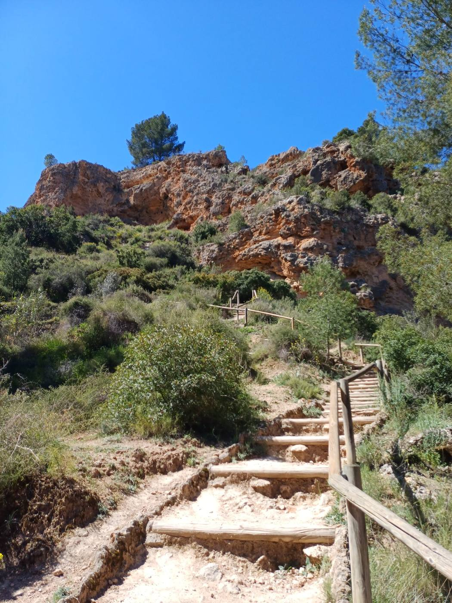
Una villa con piscina y vistas panorámicas
No te alojas en un hotel, sino en una villa con encanto rodeada de vegetación — con piscina, amplia terraza y vistas a las montañas. El lugar perfecto para desconectar del todo después de un día en los senderos.
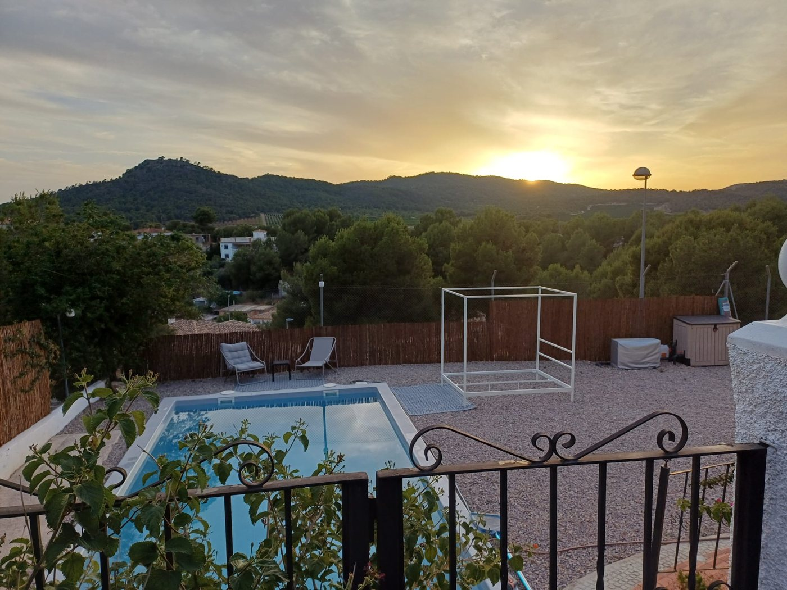
Pinares y senderos de montaña ondulantes
Corremos por paisajes impresionantes: pinares con aroma a resina, senderos de montaña ondulantes y caminos sorprendentes que nunca encontrarías por tu cuenta. Cada ruta tiene su propio ambiente y ritmo.
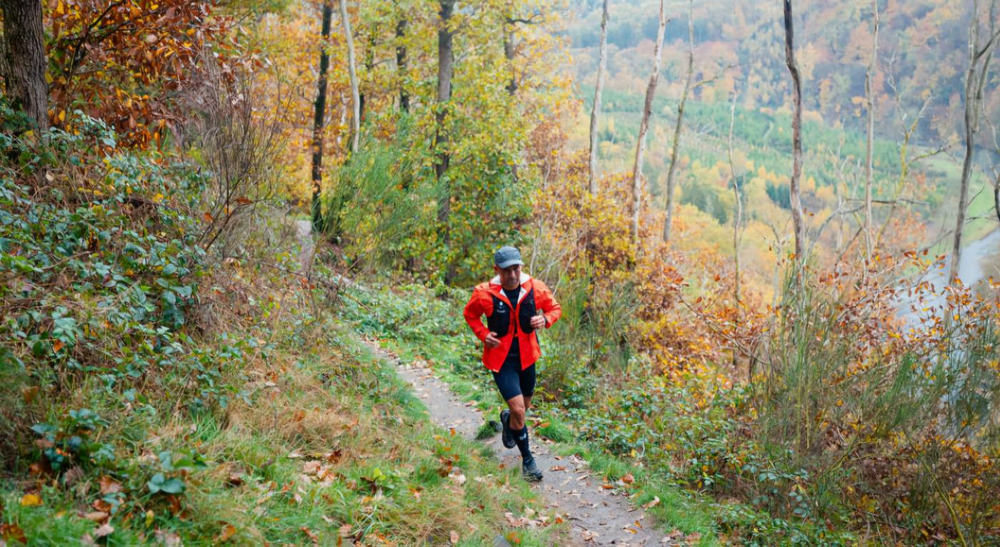
Vistas que no olvidarás fácilmente
El momento culminante: tu primera carrera de trail con confianza por el paisaje español. Con miradores sobre barrancos, valles y formaciones rocosas que se te quedan grabados mucho después de volver a casa.
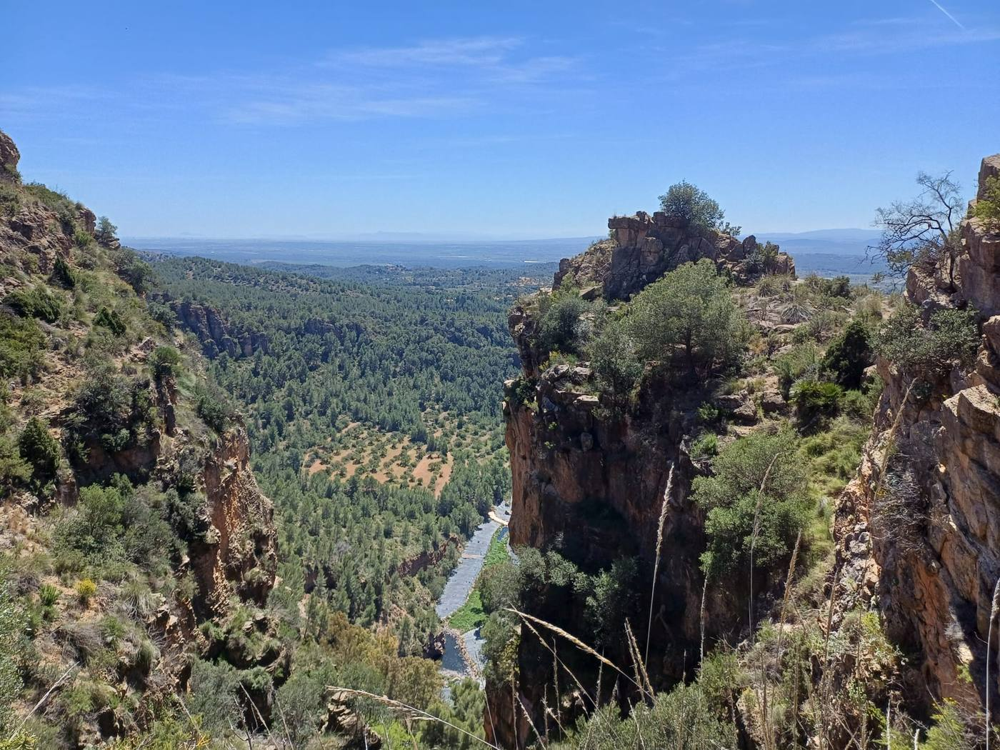
Deporte, descanso y buena compañía
Una combinación perfecta de reto físico, relax y conexión. Después de correr: buena comida, buenas conversaciones y tiempo para conocerse de verdad — en un grupo deliberadamente reducido.
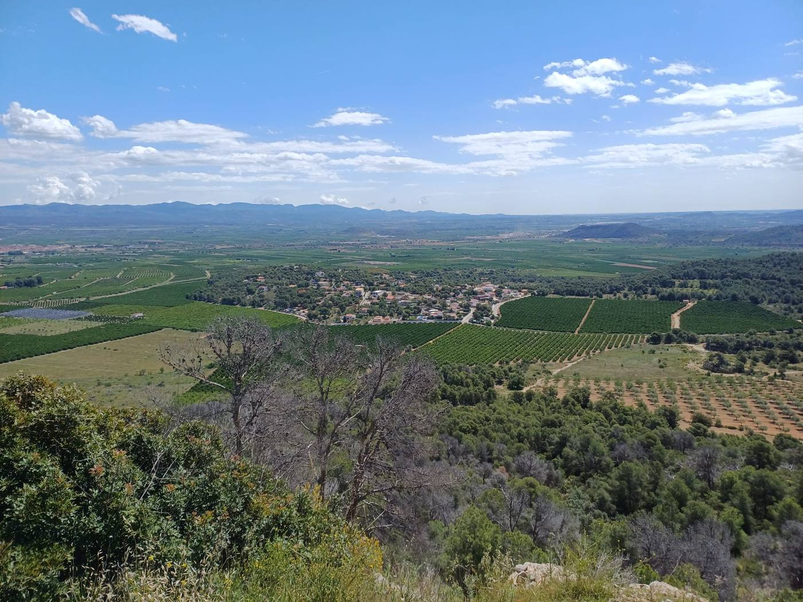
El ambiente del fin de semana
Senderos de montaña, barrancos, rincones tranquilos y una villa para recuperar el aliento — un vistazo a dónde vas a estar.
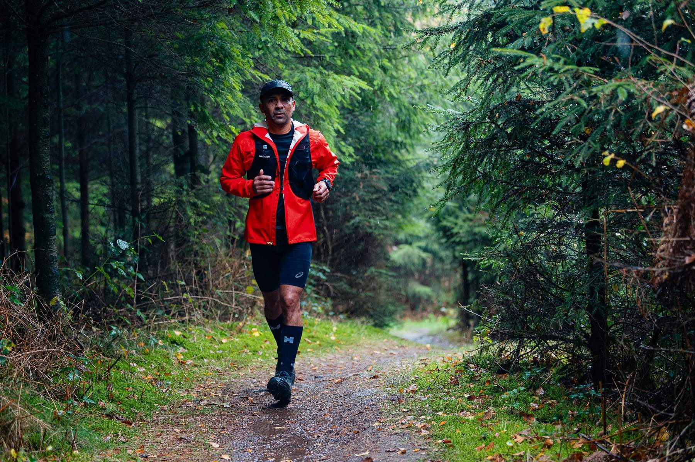
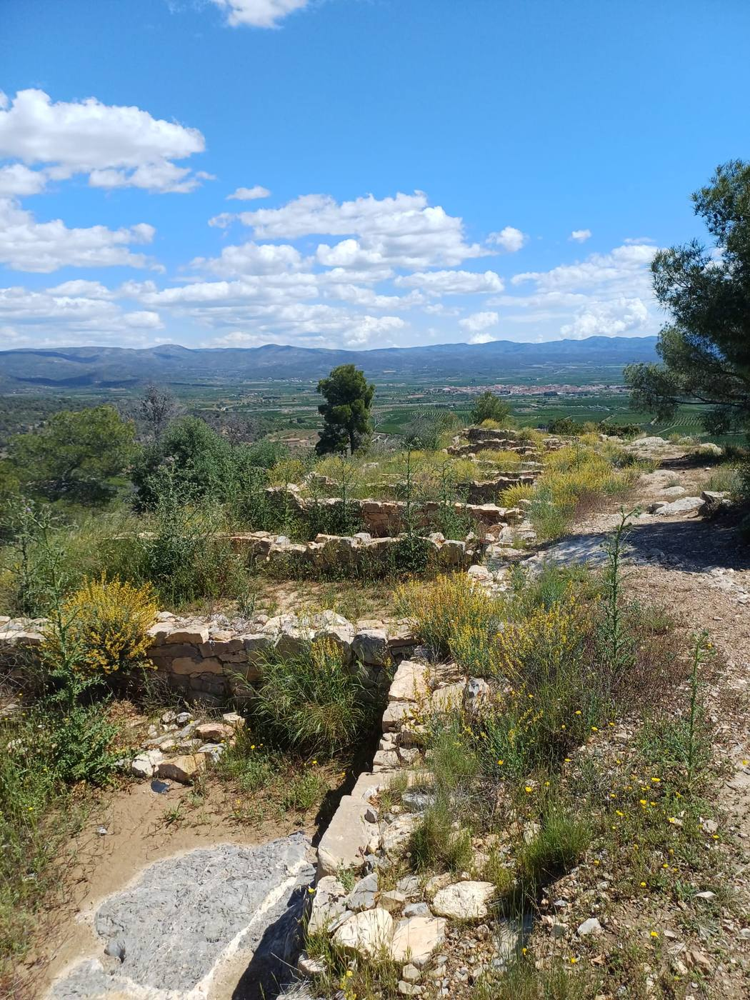
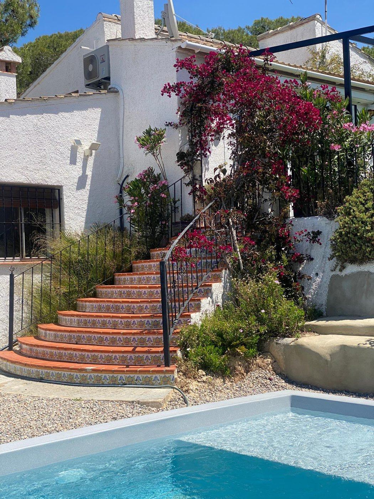
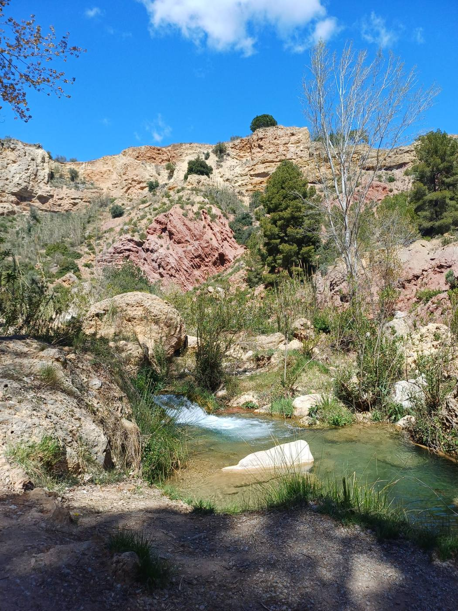
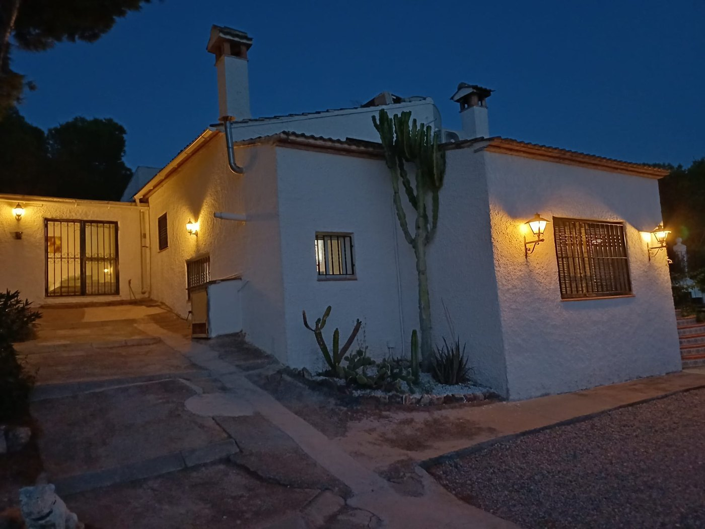
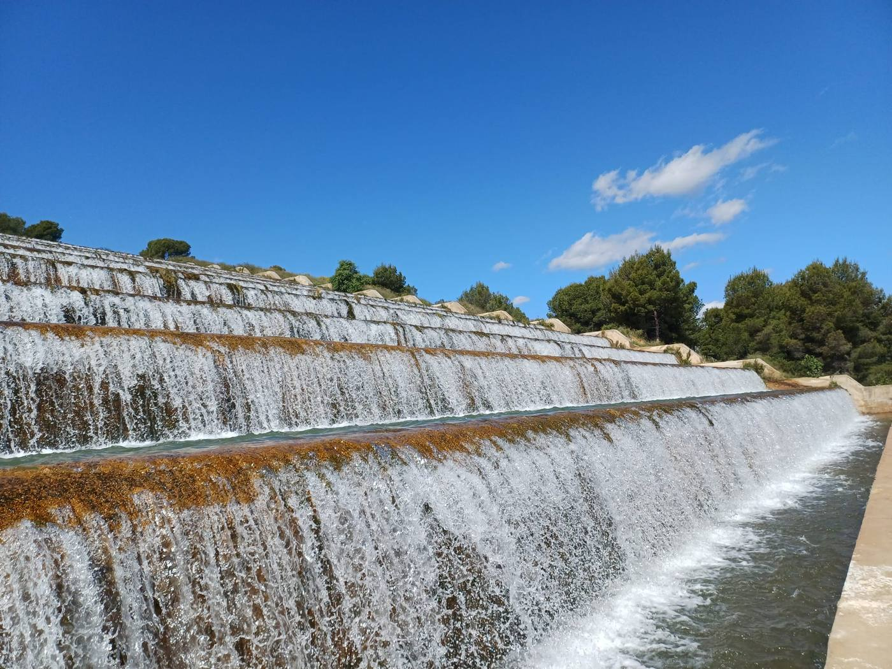
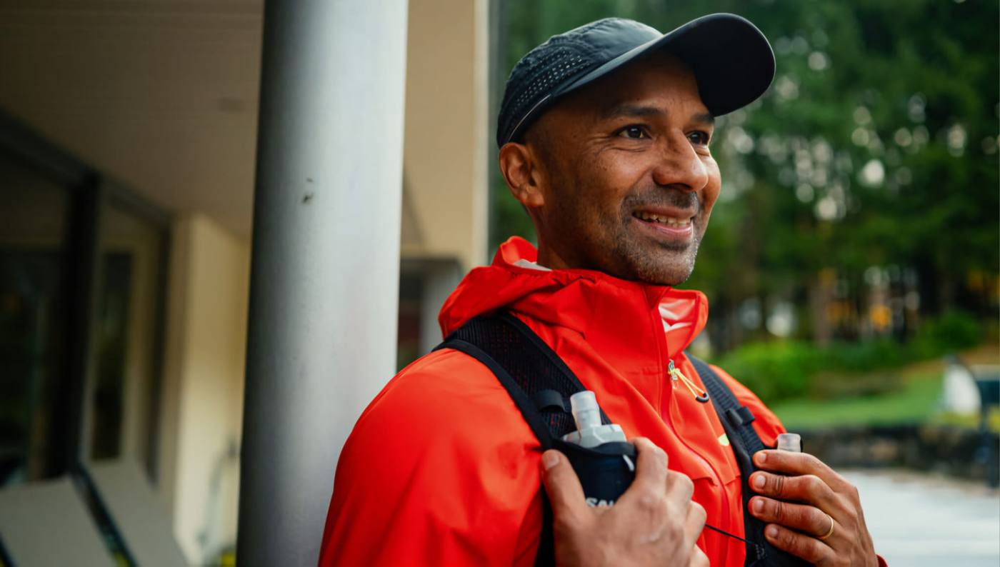
Tres días, tres rutas
Cada día tiene su propio carácter — desde un comienzo suave hasta el momento culminante del fin de semana y una ruta de recuperación tranquila para disfrutar de las sensaciones.
Casinos Sunset Loop
Un comienzo suave. Exploramos los senderos alrededor de Casinos mientras el sol se pone sobre el valle — perfecto para acostumbrarse al terreno y conocer al grupo.
Serra Calderona Grand Loop
El corazón del fin de semana: una ruta más larga por paisajes impresionantes y miradores que no olvidarás fácilmente. Caminar siempre está permitido.
Rebalsadors Recovery Loop
Un cierre más tranquilo junto a barrancos y cascadas, con tiempo de sobra para disfrutarlo antes de volver a casa.
Villa El Pinar, junto a Casinos
Durante este fin de semana no te alojas en un hotel, sino en una villa independiente con encanto que se siente como un hogar lejos de casa — en la tranquila urbanización de El Pinar, junto al auténtico pueblo de Casinos.
La villa está rodeada de vegetación con vistas a las montañas de la Sierra Calderona. Después de un día en los senderos, te relajas junto a la piscina, en la terraza o en el jardín. Por dentro, todo gira en torno a un ambiente cálido y hogareño: café por la mañana, historias después de correr, y comidas sanas y sabrosas sin prisas.
- Piscina y terraza soleada
- Vistas panorámicas a la montaña
- Espacio común para compartir
- Amplio jardín para desconectar
- Desayuno, comida y cena incluidos
- Espacio para todos, sin prisas
Maurizio Salazar
Vivo gran parte del año al pie de la Sierra Calderona. De profesión soy terapeuta deportivo y de shiatsu, y llevo toda la vida fascinado por el movimiento, la salud y el poder de la naturaleza.
A través de mi trabajo veo cada día lo importante que es salir de la rutina diaria y dedicarse tiempo a uno mismo. La naturaleza siempre ha sido para mí un lugar para recargar energías — y esa sensación de calma y libertad es lo que me encanta compartir con los demás.
Por eso organizo fines de semana de trailrunning a pequeña escala. No un viaje deportivo centrado en el rendimiento, sino una experiencia accesible donde el movimiento, la naturaleza, el descanso y la conexión son lo principal. Me encantaría llevarte a la montaña.
— Maurizio
Elige tu fin de semana
Ambas opciones están completamente organizadas — desde el traslado al aeropuerto hasta el acompañamiento en cada ruta.
Fin de semana
Viernes a domingo
- Alojamiento en Villa El Pinar
- Desayuno, comida y 2 cenas compartidas
- Traslado desde el aeropuerto de Valencia
- Traslados a los senderos
- Acompañamiento en cada ruta
Fin de semana largo
Jueves a domingo
- Alojamiento en Villa El Pinar
- Desayuno, comida y 3 cenas compartidas
- Traslado desde el aeropuerto de Valencia
- Traslados a los senderos
- Acompañamiento en cada ruta
Lo que debes saber
La información práctica más importante de un vistazo. Los términos y condiciones completos están más abajo.
¿Para quién es este fin de semana?
Abierto a cualquier persona mayor de 18 años con una condición física razonable. Eres responsable de valorar tu propia condición física y estado de salud. El grupo se mantiene deliberadamente reducido, para que haya espacio para la atención personal y cada uno pueda correr o caminar a su propio ritmo.
¿Qué incluye?
Alojamiento en la villa, desayuno, comida, 2 o 3 cenas compartidas, traslado desde el aeropuerto de Valencia, traslados a los senderos y acompañamiento en cada ruta.
Seguros
Cada participante es responsable de contar con un seguro de viaje válido, un posible seguro de cancelación y una cobertura deportiva adecuada si lo desea. Recomendamos gestionarlo siempre con antelación.
Cancelación y cambios
En caso de cancelar tu participación, se aplican los siguientes costes, calculados desde la fecha de salida:
| Hasta 8 semanas antes de la salida | 50 € de gastos de gestión |
| De 8 a 4 semanas antes de la salida | 50% del importe del viaje |
| De 4 a 2 semanas antes de la salida | 75% del importe del viaje |
| Menos de 14 días antes de la salida | 100% del importe del viaje |
No se realiza ningún reembolso en caso de finalización anticipada del fin de semana o de no presentarse en la fecha de salida. Hasta 7 días antes de la salida puedes proponer, sin coste, un participante sustituto, siempre que se comunique con antelación y sea aprobado. Recomendamos que cada participante contrate un seguro de cancelación.
Cambios de programa
Las rutas, actividades o partes del programa pueden modificarse por condiciones meteorológicas, riesgo de incendio forestal, normativa local o motivos de seguridad. Si la organización cancela el fin de semana por causa de fuerza mayor, número insuficiente de participantes o motivos de seguridad, recibirás el reembolso íntegro del importe ya abonado.
Términos y condiciones completos
1. Aplicabilidad
Estas condiciones se aplican a todas las reservas y participaciones en el Fin de Semana de Trailrunning Sierra Calderona, organizado por Wildcore Retreats. Al inscribirse, el participante declara aceptar estas condiciones.
2. Participación
La participación está abierta a personas mayores de 18 años. El participante declara encontrarse en un estado de salud suficiente para realizar actividades de trailrunning y senderismo, y es responsable de valorar su propia condición física. La organización se reserva el derecho de denegar la participación si lo considera necesario para la seguridad del participante o del grupo.
3. Reservas y pago
Una reserva es definitiva tras recibir la señal o el pago completo. El importe restante debe abonarse como máximo 30 días antes de la salida. Si el pago no se recibe a tiempo, la organización puede cancelar la reserva.
4. Cancelación por parte del participante
Hasta 8 semanas antes de la salida: 50 € de gastos de gestión. De 8 a 4 semanas antes de la salida: 50% del importe del viaje. De 4 a 2 semanas antes de la salida: 75% del importe del viaje. Menos de 14 días antes de la salida: 100% del importe del viaje. No se realiza ningún reembolso en caso de finalización anticipada del fin de semana o de no presentarse en la fecha de salida. Se recomienda a los participantes contratar un seguro de viaje y de cancelación.
Participante sustituto: un participante puede, hasta 7 días antes de la salida, proponer sin coste un participante sustituto, siempre que se informe a la organización con antelación, el sustituto cumpla las condiciones de participación, y se reembolsen los costes adicionales derivados del cambio.
5. Cancelación por parte de la organización
La organización se reserva el derecho de cancelar el fin de semana en caso de número insuficiente de participantes, fuerza mayor, condiciones meteorológicas extremas o riesgos de seguridad imprevistos. En ese caso, se reembolsará íntegramente el importe ya abonado. Otros costes, como el transporte o los seguros, quedan fuera de la responsabilidad de la organización.
6. Riesgo y responsabilidad
El trailrunning y las actividades al aire libre conllevan riesgos inherentes. La participación se realiza por cuenta y riesgo del participante. La organización no se responsabiliza de lesiones, accidentes, pérdidas, robos o daños a bienes personales, salvo en caso de dolo o negligencia grave. El participante es en todo momento responsable de sus propios actos.
7. Conducta y seguridad
Se espera que los participantes sigan las instrucciones del guía, traten con respeto a los demás participantes, el alojamiento y la naturaleza, y no asuman riesgos inaceptables durante las actividades. La organización puede excluir a un participante de seguir participando si su conducta pone en peligro la seguridad o el bienestar del grupo.
8. Cambios en el programa
La organización se reserva el derecho de modificar rutas, actividades, horarios o partes del programa por condiciones meteorológicas, riesgo de incendio forestal, normativa local o motivos de seguridad.
9. Seguros
Cada participante es responsable de contar con un seguro de viaje válido, un posible seguro de cancelación y una cobertura deportiva adecuada si lo desea.
10. Material fotográfico y de vídeo
Durante el fin de semana se pueden tomar fotografías y vídeos con fines promocionales. Si un participante tiene objeciones al respecto, debe comunicarlo por escrito con antelación.
11. Datos personales
Los datos personales se utilizan exclusivamente para la organización y realización del evento y no se comparten con terceros sin consentimiento, salvo que sea necesario para la ejecución del viaje.
12. Fuerza mayor
Se entiende por fuerza mayor cualquier situación fuera del control razonable de la organización, incluyendo catástrofes naturales, incendios forestales, pandemias, huelgas, medidas gubernamentales y condiciones meteorológicas extremas. En tales situaciones, el programa puede modificarse, posponerse o cancelarse.
¿Listo para adentrarte en la montaña?
Envíanos un mensaje y te responderemos enseguida — o contacta directamente con nosotros a través de los siguientes datos.